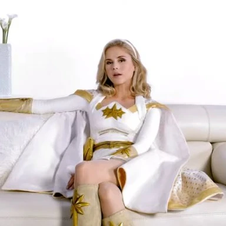
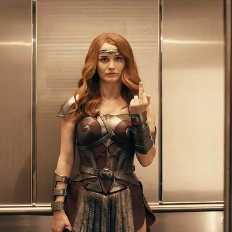
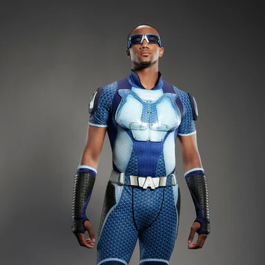
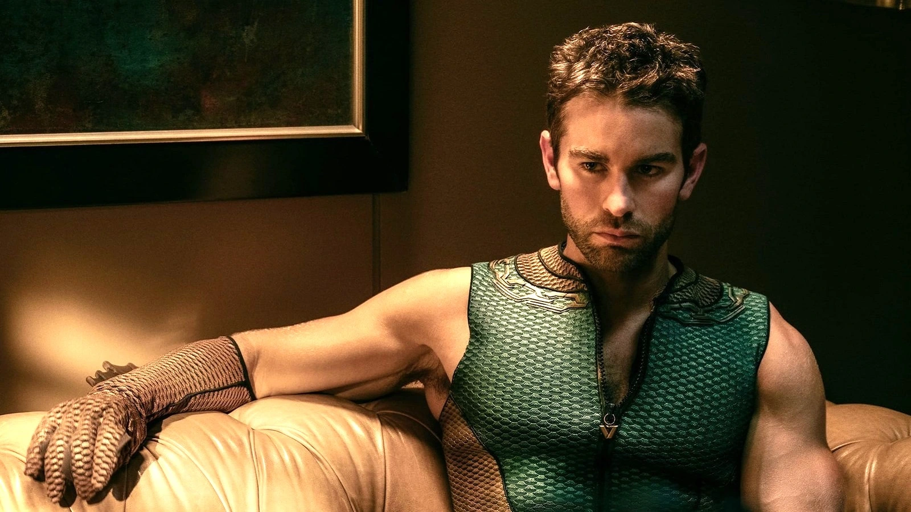
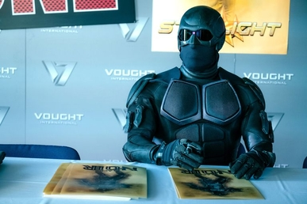

Gerçek Adı: John Goodman
Güçler ve Yetenekler: Süper güç, uçma yeteneği, ısı vizyonu, süper hız
Açıklama: Homelander, Vought'un en güçlü süper kahramanıdır ve "Ultraman" olarak da bilinir. Yüksek uçma yeteneği ve müthiş fiziksel gücü ile tanınır. Çoğunlukla kamuoyuna karşı iyi bir imaj sergilerken, kişisel amaçları için tehlikeli olabilecek davranışlar sergileyebilir.
Gerçek Adı: Annie January
Güçler ve Yetenekler: Işık emisyonu, ışık patlamaları, süper güç
Açıklama: Starlight, güçlü ışık emisyonları ve patlamaları yapabilen genç bir süper kahramandır. Göz kamaştırıcı ışık gücü ve iyi kalpli doğası ile tanınır. Vought'un en yeni kahramanlarından biri olarak, toplumda güven ve adalet sağlama konusunda çalışır.
Gerçek Adı: Margaret Shaw
Güçler ve Yetenekler: Süper güç, dayanıklılık, savaş yetenekleri
Açıklama: Queen Maeve, yüksek dayanıklılığı ve savaş yetenekleri ile bilinen güçlü bir kahramandır. Bir savaşçı olarak, güçlü vücut yapısı ve dövüş becerileri ile dikkat çeker. Genellikle liderlik ve cesaretle ilişkilendirilir.
Gerçek Adı: Reggie Franklin
Güçler ve Yetenekler: Süper hız
Açıklama: A-Train, süper hız yeteneğine sahip bir kahramandır. Hızla koşma yeteneği ile, Vought'un en hızlı kahramanlarından biri olarak tanınır. Performans ve hız konusundaki yetenekleri, onu medyada sıkça öne çıkaran bir figür haline getirir.
Gerçek Adı: Kevin Moskowitz
Güçler ve Yetenekler: Su altında nefes alma, su hayvanlarıyla iletişim
Açıklama: The Deep, su altında nefes alabilen ve su hayvanlarıyla iletişim kurabilen bir kahramandır. Denizle olan güçlü bağı sayesinde deniz yaşamını koruma ve su altı görevlerinde etkilidir. Ancak, kişisel zorlukları ve içsel çatışmaları da vardır.
Gerçek Adı: Belirsiz
Güçler ve Yetenekler: Gizlilik, dövüş yetenekleri, yüksek dayanıklılık
Açıklama: Black Noir, gizlilik ve dövüş yetenekleri ile tanınır. Çoğunlukla sessiz ve gizemli bir figür olarak bilinir, savaşta son derece etkili ve dayanıklıdır. Vought'un elit savaşçılarından biri olarak, görevlerini sessizce yerine getirir.

Gerçek Adı: Kevin Moskowitz
Güçler ve Yetenekler: Şeffaflık, dokunulmazlık
Açıklama: Translucent, şeffaf olma ve fiziksel darbelere karşı dokunulmazlık yeteneğine sahiptir. Bu özelliği, onun görünmez olmasını sağlar ve çeşitli görevlerde avantaj sağlar. Ancak, kişisel ve ahlaki sorunlarla da mücadele eder.